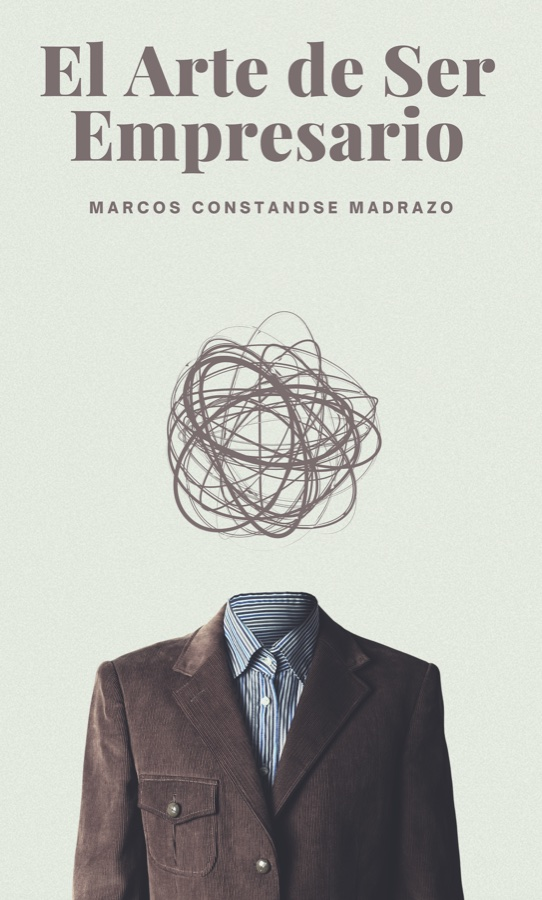

4
Documental completo
Conoce Parque Cancún, sus Jardines y sus conclusiones. Tú decides cuándo y cómo verlo.
DOCUMENTAL
Parque-Cancún
TUYO · MÍO · NUESTRO
Ver documental completo
Conoce Parque Cancún, sus Jardines y sus conclusiones. Tú decides cuándo y cómo verlo.
Un recorrido de preguntas y respuestas para reflexionar sobre el ser humano, la vida, la conciencia y nuestra evolución.
Encuentra las respuestas que deseas conocer.
Las 51 preguntasEl humanismo evolutivo es una corriente de pensamiento filosófico que el Ing. Marcos Constandse Madrazo desarrolló, a través de la escritura de seis de sus libros:

Se expone con un enfoque filosófico y basado en “La evolución del universo”, la teoría filosófica.

Plantea una visión de sostenibilidad ecológica del planeta y su biósfera.

Novela sobre Cancún, basado en la realidad evolutiva de un personaje nativo maya de un pueblo perdido en la selva, que evoluciona hasta formar una familia moderna en 3 generaciones. Un ejemplo de la vida real que demuestra que “evolucionar es ser”.

Una disertación que explica, que si fundamentamos nuestras acciones en los ejemplos que nos da el universo en la evolución, la humanidad podrá tener un futuro luminoso.

Un ensayo que trata de reivindicar el oficio empresarial o demostrar cómo la labor empresarial es paralela a la corriente de “humanismo evolutivo” y genera bienestar a la humanidad.
Resumen explicativo de los Jardines de la Evolución, la Meditación y la Filosofía, y define al resumen del “pensamiento del humanismo evolutivo”.
Consulta los resúmenes y elige por dónde comenzar.
Ver los resúmenesContinúa explorando:
Conoce, comparte y forma parte de un mundo más consciente, solidario y humano.
Únete al club